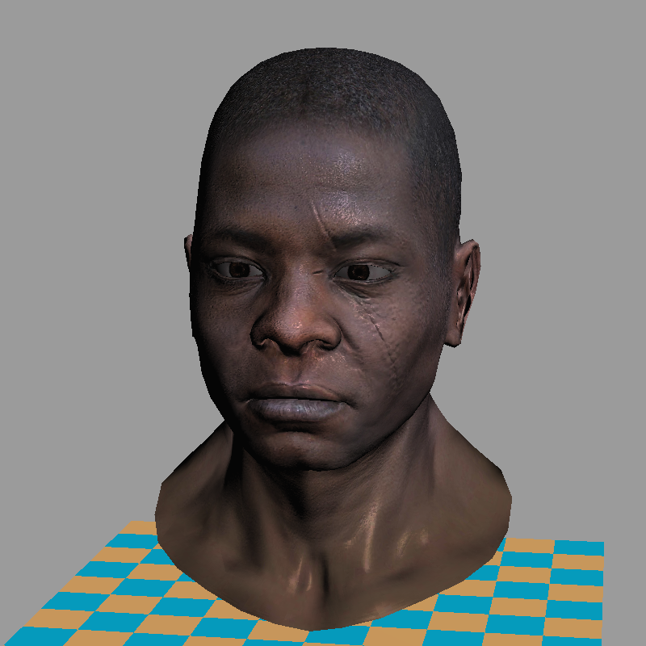
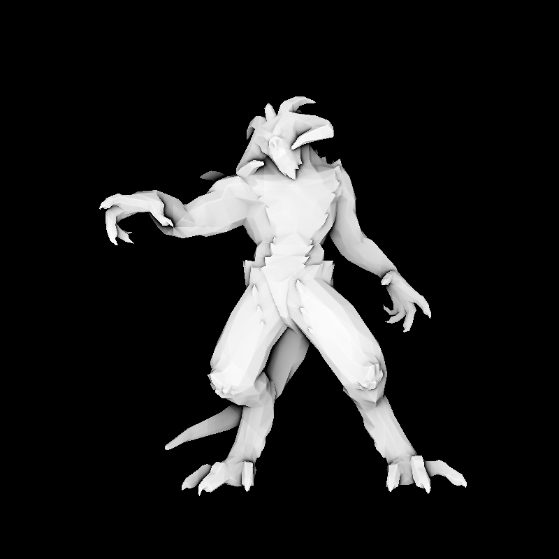

Software rendering in 500 lines of bare C++
In this series of articles, I aim to demonstrate how OpenGL, Vulkan, Metal, and DirectX work by writing a simplified clone from scratch. Surprisingly, many people struggle with the initial hurdle of learning a 3D graphics API. To help with this, I have prepared a short series of lectures, after which my students are able to produce quite capable renderers.
The task is as follows: using no third-party libraries (especially graphics-related ones), we will generate an image like this:

Warning: This is a training material that loosely follows the structure of modern 3D graphics libraries. It is a software renderer. I do not intend to show how to write GPU applications — I want to show how they work. I firmly believe that understanding this is essential for writing efficient applications using 3D libraries.
The starting point
The final code consists of about 500 lines. My students typically require 10 to 20 hours of programming to start producing such renderers. The input is a 3D model composed of a triangulated mesh and textures. The output is a rendereding. There is no graphical interface, the program simply generates an image.
To minimize external dependencies, I provide my students with a single class for handling TGA files — one of the simplest formats supporting RGB, RGBA, and grayscale images. This serves as our foundation for image manipulation. At the beginning, the only available functionality (besides loading and saving images) is the ability to set the color of a single pixel.
There are no built-in functions for drawing line segments or triangles — we will implement all of this manually. While I provide my own source code, written alongside my students, I do not recommend using it directly, as doing the work yourself is essential to understanding the concepts. The complete code is available on github, and you can find the initial source code I provide to my students here. Behold, here is the starting point:
main.cpp
#include "tgaimage.h"
constexpr TGAColor white = {255, 255, 255, 255}; // attention, BGRA order
constexpr TGAColor green = { 0, 255, 0, 255};
constexpr TGAColor red = { 0, 0, 255, 255};
constexpr TGAColor blue = {255, 128, 64, 255};
constexpr TGAColor yellow = { 0, 200, 255, 255};
int main(int argc, char** argv) {
constexpr int width = 64;
constexpr int height = 64;
TGAImage framebuffer(width, height, TGAImage::RGB);
int ax = 7, ay = 3;
int bx = 12, by = 37;
int cx = 62, cy = 53;
framebuffer.set(ax, ay, white);
framebuffer.set(bx, by, white);
framebuffer.set(cx, cy, white);
framebuffer.write_tga_file("framebuffer.tga");
return 0;
}
It produces the 64x64 image framebuffer.tga, here I scaled it for better readability:

Compilation
git clone https://github.com/ssloy/tinyrenderer.git &&
cd tinyrenderer &&
cmake -Bbuild &&
cmake --build build -j &&
build/tinyrenderer obj/diablo3_pose/diablo3_pose.obj obj/floor.obj
framebuffer.tga.
Teaser: few examples made with the renderer
